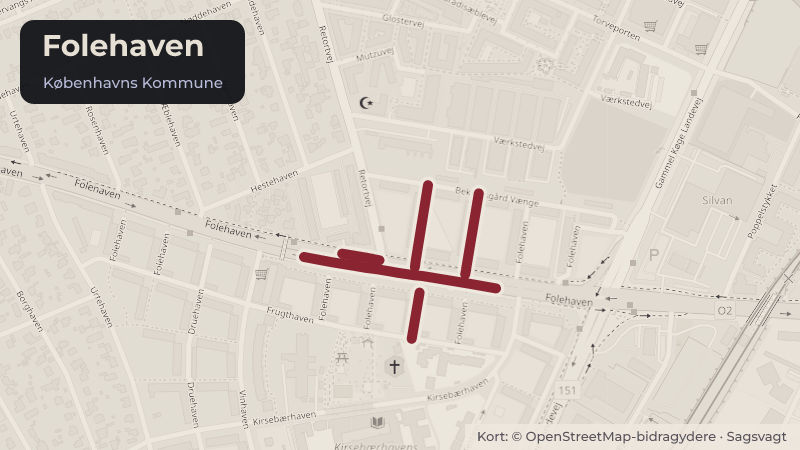

På dagsordenen 30. november, Klima-, Miljø- og Teknikudvalget
Kommunal garanti for lån til renovering og nye Almene Boliger, 3B afd. Folehaven, Valby

Kort fortalt
- Hvem
- Klima-, Miljø- og Teknikudvalget
- Hvornår
- Mandag 30. november 2026
- Status
- På dagsordenen. Sagen behandles på mødet.
- Næste skridt
- Hvis Klima-, Miljø- og Teknikudvalget godkender garantiforpligtelsen, sendes erklæringen om kommunegaranti til underskrift hos klima-, miljø- og teknikborgmesteren og forvaltningens administrerende direktør. Herefter returneres den til realkreditinstituttet.
Er noget forkert her? Skriv til os
Hvad kan du gøre?
- Skriv til politikerne
- Udvalgets møder er lukkede, men du kan skrive til medlemmerne før mødet mandag 30. november 2026. Du finder dem på kk.dk.
Læs hele sagen Kommunens egen tekst
Indstilling
Klima-,
Miljø- og Teknikforvaltningen indstiller, at Klima-, Miljø- og Teknikudvalget
godkender,
• at
kommunen stiller garanti for realkreditlån til finansiering af en
helhedsplan i den almene boligorganisation 3B. Kommunen skal garantere 100
% for et lån på 790,7 mio. kr. samt 95,8% (164,8 mio. kr.) for et lån på
172 mio. kr.
• at
kommunen stiller garanti for realkreditlån til finansiering af 60 nye
familieboliger i den almene boligorganisation 3B. Kommunen skal garantere
for 51,9 % (81,69 mio. kr.) af et lån på 157,6 mio. kr.
Problemstilling
Borgerrepræsentationen
har den 25. juni 2026 godkendt en ændret helhedsplan i afdelingen Folehaven,
med kommunal garantistillelse for lån til arbejderne, og har samtidig
bemyndiget Klima-, Miljø- og Teknikudvalget til efterfølgende at godkende den
konkrete garantistillelse. Klima-, Miljø- og Teknikudvalget gav den 3. juli
2026 den endelige godkendelse af projektmateriale, finansiering og anlægsbudget
forud for byggestart (skema B tilsagn). Forvaltningen har nu modtaget en
ansøgning om garantistillelse fra et realkreditinstitut.
Garantien
stilles med hjemmel i almenboligloven, jf. bilag 2.
Løsning
Helhedsplanen
samt opførelsen af nye familieboliger i afdelingen er under gennemførelse.
Oplysninger om garantistillelsen fremgår af nedenstående skema.
De mere
generelle oplysninger om en byggesags faser/kommunens sagsbehandling samt
lovgrundlaget (almenboligloven, styrelsesloven og lånebekendtgørelsen) er
beskrevet i bilag 2.
Helhedsplan
Adresse
Druehaven 1-17, 27-47,
Folehaven 1-5, 11-99, Frugthaven 14, 16, 19-41, Gammel Køge Landevej 110-160,
Kirsebærhaven 2-6, 51-61, Urtehaven 53-65, Vinhaven 1-59, 2500 Valby
Lån, kr.
790.741.000 kr. og 172.050.000
kr.
Garanti pct.
100 % og 95,83%
Kommunens hæftelse i kr.
955.616.515 kr.
Låntager
3B, afdeling Folehaven
Långiver
Jyske Bank
Beslutningsdato i BR
25. juni 2026
Antal boliger
901
Sagstype
Fysisk helhedsplan
Familieboliger
Adresse
Druehaven 1, 2500 Valby
Lån, kr.
157.559.000 kr.
Garanti pct.
51,85%
Kommunens hæftelse i kr.
81.694.341,5 kr.
Låntager
3B, afdeling Folehaven
Långiver
Jyske Bank
Beslutningsdato i BR
25. juni 2026
Antal boliger
60
Sagstype
Opførelse af familieboliger
Borgerrepræsentationen
besluttede den 25. juni 2026 en garantibevilling til renovering og opførelse af
almene boliger, hvilket betyder at forvaltningen administrativt kan godkende
nybyggeri af almene boliger uden politisk forelæggelse. Den konkrete
garantistillelse vil dog fortsat skulle godkendes af Klima-, Miljø- og
Teknikudvalget. Der vil derfor også fremover blive forelagt indstilling om
garantistillelse for Klima-, Miljø- og Teknikudvalget i de konkrete sager. Det
følger af reglerne i lånebekendtgørelsen.
Politisk
handlerum
Der er
begrænset politisk handlerum, da Borgerrepræsentationen den 25. juni 2026 har
godkendt kommunal garantistillelse i forbindelse med den principielle
godkendelse af projektets rammer, herunder behov, omfang og anlægsøkonomi
(skema B).
Økonomi
Garantien
medfører ikke i sig selv bevillingsmæssige konsekvenser for Klima-, Miljø- og
Teknikudvalget. Garantien kommer kun til udbetaling, såfremt
boligafdelingen ikke selv kan betale ydelserne på lånet. Forvaltningen har ikke
på nuværende tidspunkt indikationer på, at garantien vil komme til udbetaling.
Videre proces
Hvis
Klima-, Miljø- og Teknikudvalget godkender garantiforpligtelsen, sendes
erklæringen om kommunegaranti til underskrift hos klima-, miljø- og
teknikborgmesteren og forvaltningens administrerende direktør. Herefter
returneres den til realkreditinstituttet.
Bilag
Kilde: Københavns Kommune, Klima-, Miljø- og Teknikudvalget, dagsorden fra mødet mandag 30. november 2026, punkt 15. Læs den originale sag hos kommunen.
Steder i sagen: Folehaven